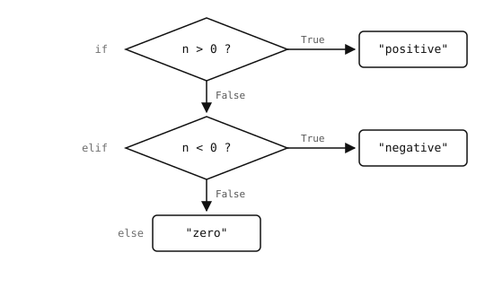

2.11. العبارات الشرطية¶
العبارة الشرطية تشغّل كتلة من التعليمات البرمجية فقط عندما يُقيَّم اختبار ما إلى صحيح. والكلمة المفتاحية هي if، وقد يتبعها اختياريًا فرع elif واحد أو أكثر ("else if") وفرع else نهائي.
n = 42
if n > 0:
print("positive")
elif n < 0:
print("negative")
else:
print("zero")
متن كل فرع هو كل ما هو مزاح للداخل تحته (أربع مسافات حسب العُرف). يمر Python على الفروع بالترتيب، ويشغّل أول فرع اختباره صحيح، ويتخطى البقية. ولا تُشغّل كتلة else إلا إذا كان كل اختبار سابق خاطئًا؛ وهي اختيارية دائمًا.

فرع واحد فقط يُشغَّل على الإطلاق. تُقيَّم الاختبارات من الأعلى إلى الأسفل حتى ينجح أحدها؛ ويُتخطى الباقي.¶
2.11.1. الصحة المنطقية¶
لا يلزم أن يُعيد الاختبار في if القيمة True أو False -- إذ تُحسب أي قيمة إما صحيحة منطقيًا أو خاطئة منطقيًا. والقيم الخاطئة منطقيًا هي:
كل ما عدا ذلك صحيح منطقيًا. وهذا يتيح لك كتابة اختبارات مُقتضبة:
if name: # false on empty string
print("hello", name)
if items: # false on empty list, dict, etc.
process(items)
انتبه إلى أن الصحة المنطقية تغيّر المعنى. فـ if value: ليست كـ if value is not None: -- إذ إن الأولى تكون خاطئة أيضًا عندما يكون value هو 0 أو "". وعندما تعني حقًا "هل هذا بالضبط None"، استخدم is None / is not None صراحةً.
2.11.2. التعبيرات الثلاثية¶
يمكن أن تظهر العبارة الشرطية داخل تعبير:
label = "even" if n % 2 == 0 else "odd"
تُقرأ "label هو "even" إذا كان n % 2 == 0 وإلا "odd"". مفيدة للأسطر المفردة؛ أما لأي شيء يتجاوز سطرًا واحدًا، فعبارة if الكاملة أسهل في القراءة.
2.11.3. التداخل والإرجاعات المبكرة¶
يمكن أن تتداخل العبارات الشرطية بأي عمق، لكن كل طبقة إزاحة إضافية تجعل الدالة أصعب في القراءة. والمثال أدناه يفحص أربعة شروط قبل القيام بالعمل الفعلي ويترك السطر المفيد مدفونًا أربع إزاحات للداخل:
def process(item):
if item is not None:
if item.is_valid():
if item.size() > 0:
if item.owner == "me":
return do_the_work(item)
return None
يفلطح نمطان هذا النوع من التعليمات البرمجية.
2.11.3.1. الإرجاعات المبكرة للحراسات¶
عالِج كل حالة "انسحاب" أولًا، كل منها بـ return خاص بها، حتى يبقى المنطق الرئيسي عند الإزاحة الخارجية. وتُقرأ كل حراسة كـ"هذه ليست حالة نعالجها؛ غادِر":
def process(item):
if item is None:
return None
if not item.is_valid():
return None
if item.size() == 0:
return None
if item.owner != "me":
return None
return do_the_work(item)
أصبح "المسار الرئيسي" الآن سطرًا واحدًا في أسفل الدالة، لا مدفونًا داخل أربع طبقات. ويُسمى هذا الأسلوب أحيانًا نمط عبارة الحراسة (guard clause).
2.11.3.2. دمج الاختبارات بـ and / or¶
عندما يجب أن تتحقق عدة شروط جميعها للفرع نفسه، ادمجها بـ and بدلًا من التداخل. أما الشروط التي يُطلق كل منها الفرع باستقلالية فتُدمج بـ or:
# all must hold -- use `and`
if user.is_admin() and user.has_permission("write") and not locked:
save()
# any one of them is enough -- use `or`
if c == " " or c == "\t" or c == "\n":
whitespace_count += 1
كلتا الصورتين تُجريان تقييمًا بالدائرة القصيرة، لذا لا يُجرى فحص باهظ على الجانب الأيمن إلا عندما لا تكون الفحوص الأرخص على اليسار قد حسمت المسألة بالفعل.